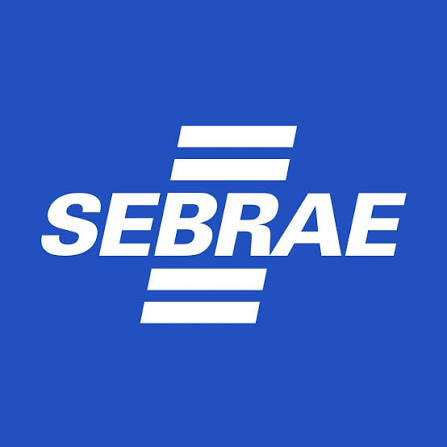
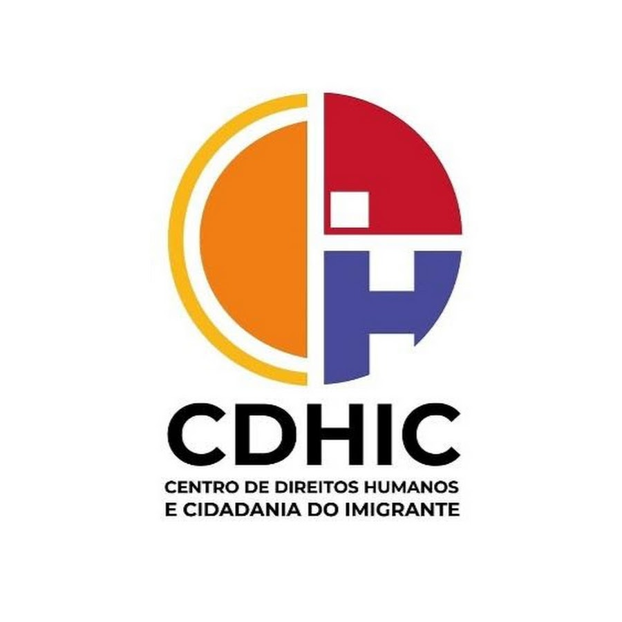
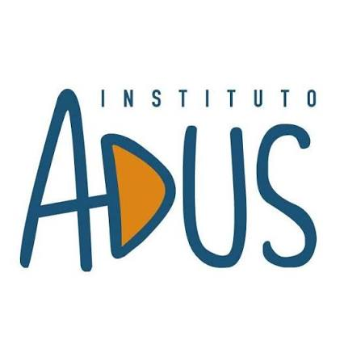
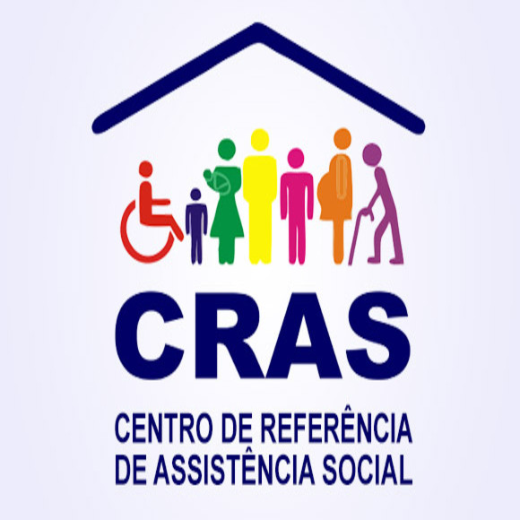
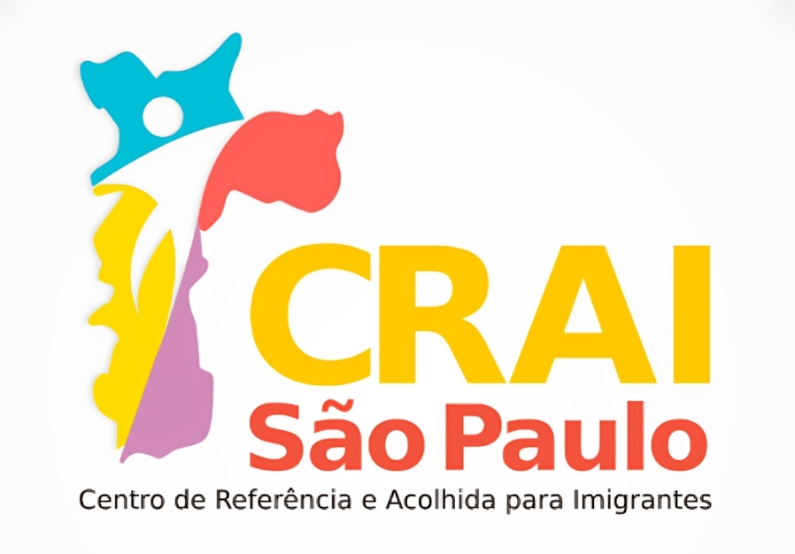
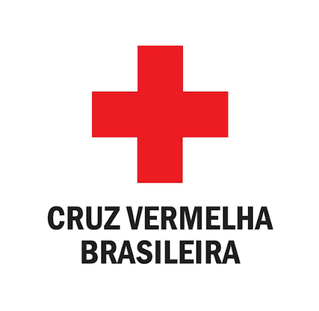

SEBRAE
O Serviço Brasileiro de Apoio às Micro e Pequenas Empresas incentiva o empreendedorismo e oferece orientação e capacitação para quem deseja criar ou desenvolver um pequeno negócio.
Conheça algumas das instituições que contribuem para ampliar o acesso à formação, à assistência e à garantia de direitos.

O Serviço Brasileiro de Apoio às Micro e Pequenas Empresas incentiva o empreendedorismo e oferece orientação e capacitação para quem deseja criar ou desenvolver um pequeno negócio.
O Serviço Nacional de Aprendizagem Industrial promove educação profissional e cursos de qualificação, preparando pessoas para atuar em diferentes áreas da indústria.

O Centro de Direitos Humanos e Cidadania do Imigrante atua na promoção dos direitos humanos e da cidadania de pessoas migrantes e suas famílias.

O Instituto de Reintegração do Refugiado — ADUS — trabalha para apoiar a integração de pessoas refugiadas no Brasil, promovendo acolhimento e inclusão social.
A DPU presta assistência jurídica gratuita em casos de competência federal e atua na defesa dos direitos de pessoas que não podem pagar por um advogado.

O Centro de Referência de Assistência Social é uma unidade pública que oferece proteção social básica, orientação e acesso a serviços e benefícios socioassistenciais.

O Centro de Referência e Atendimento para Imigrantes oferece orientação e atendimento a pessoas imigrantes, facilitando o acesso a direitos, documentação e serviços públicos.

O Movimento Internacional da Cruz Vermelha e do Crescente Vermelho presta assistência humanitária e ajuda a proteger a vida e a dignidade de pessoas afetadas por crises.